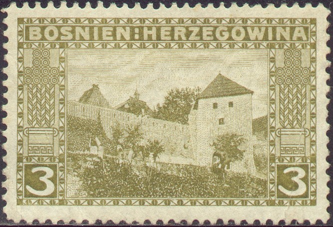
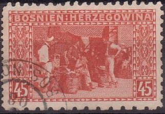
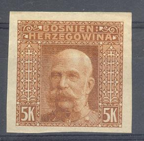

{kind=link}



Return To Catalogue - Bosnia and Herzegowina part 1 - Part 3 - Part 4 - Yugoslavia - Yugoslavia, issues for Bosnia and Herzegowina
Note: on my website many of the
pictures can not be seen! They are of course present in the
catalogue;
contact me if you want to purchase the catalogue
1 h black 2 h violet 3 h olive 5 h green 6 h brown 10 h red 12 h blue (village view, 1912) 20 h brown 25 h blue 30 h green 35 h green 40 h orange (postal coach) 45 h red 50 h lilac (postal car) 60 h blue (Bridge, 1912) 72 h red (Bridge and mountains, 1912) 1 K red 2 K green 5 K blue (Emperor Francis Joseph) Surcharged


'1914 7 Heller' (red) on 5 h green (1914) '1914 12 Heller' (red) on 10 h red (1914) '1915 7 Heller' (red) on 5 h green (1915) '1915 12 Heller' (blue) on 10 h red (1915)
Value of the stamps |
|||
vc = very common c = common * = not so common ** = uncommon |
*** = very uncommon R = rare RR = very rare RRR = extremely rare |
||
| Value | Unused | Used | Remarks |
| 1 h | c | c | |
| 2 h | c | c | |
| 3 h | c | c | |
| 5 h | c | c | |
| 6 h | * | * | |
| 10 h | c | c | |
| 12 h | *** | *** | |
| 20 h | * | c | |
| 25 h | * | * | |
| 30 h | * | * | |
| 35 h | * | * | |
| 40 h | * | * | |
| 45 h | ** | * | |
| 50 h | * | * | |
| 60 h | ** | ** | |
| 72 h | RR | RR | |
| 1 K | ** | ** | |
| 2 K | *** | *** | |
| 5 K | * | ** | |
| 1914 overprint | |||
| 7 h on 5 h | c | c | Inverted overprint: R Two types of '4' |
| 12 h on 10 h | c | c | Two types of '4' |
| 1915 overprint | |||
| 7 h on 5 h | *** | *** | |
| 12 h on 10 h | * | * | |
Usually these stamps are perforated 12 1/2, though several 'misperforations' exist: 6, 9 and combinations of these, examples:

I have seen imperforate stamps of all values
(except the ones issued in 1912 and the surcharged stamps), even
in cancelled condition.
I've also seen stamps with punched holes in it. I've been told
that these are remainders.
Imperforate cancelled 5 h stamp

Fournier forgery as found in a 'Fournier Album of Philatelic
Forgeries', reduced size
Forgeries: the 5 K value has been forged by the forger Fournier. A picture can be found in 'The Fournier Album of Philatelic forgeries'. I have no further information on this forgery. If anybody has an image of a Fournier forgery, or information on distinghuishing characteristics, please contact me!
Other forgeries of the 12 h, 60 h and 72 h exist, both perforated and imperforate, example:


('FAKSIMIL' in the left bottom corner)
These forgeries have in small letters the word 'FAKSIMIL' in the left bottom corner. I've even seen them printed in a strip of three; 72 h at the left, 12 h in the middle and 60 h at the right.
1 h black (view of Doboj) 2 h violet (city of Mostar with bridge) 3 h olive (city of Jajce) 5 h green (mountains and bridge) 6 h brown (valley with trees) 10 h red (valley with Vrbas river) 20 h brown (Mostar and bridge) 25 h blue (view of Sarajevo) 30 h green (postman and mule) 35 h green (river view) 40 h orange (postal coach) 45 h red (bazaar in Sarajevo) 50 h lilac (postal car) 1 K red (Sarajevo view) 2 K green (Jacje view) 5 K blue (emperor Francis Joseph) Overprinted '1918' in red

2 h violet (1918)
The perforation of all these stamps is 12 1/2.
Value of the stamps |
|||
vc = very common c = common * = not so common ** = uncommon |
*** = very uncommon R = rare RR = very rare RRR = extremely rare |
||
| Value | Unused | Used | Remarks |
| 1 h | c | c | |
| 2 h | * | * | |
| 3 h | * | * | |
| 5 h | * | * | |
| 6 h | * | * | |
| 10 h | * | * | |
| 20 h | * | * | |
| 25 h | *** | *** | |
| 30 h | ** | ** | |
| 35 h | *** | *** | |
| 40 h | *** | *** | |
| 45 h | *** | *** | |
| 50 h | *** | *** | |
| 1 K | *** | *** | |
| 2 K | *** | *** | |
| 5 K | * | *** | |
| 1918 overprint | |||
| 2 h | * | * | |
Fournier forgery as found in a 'Fournier Album of Philatelic
Forgeries', reduced size
The 5 K value has been forged by the forger Fournier. A picture can be found in 'The Fournier Album of Philatelic forgeries'. I have no further information on this forgery.If anybody has an image of a Fournier forgery, or information on distinghuishing characteristics, please contact me!
Overprinted 'DRZAVA S.H.S.SRBA 1918 Bosna i Hercegovina', in latin or cyrillic caracters, issued for Yugoslavia see Yugoslavia issues for Bosnia and Herzegowina.
For more stamps of Bosnia and Herzegowina, click here for part 3.